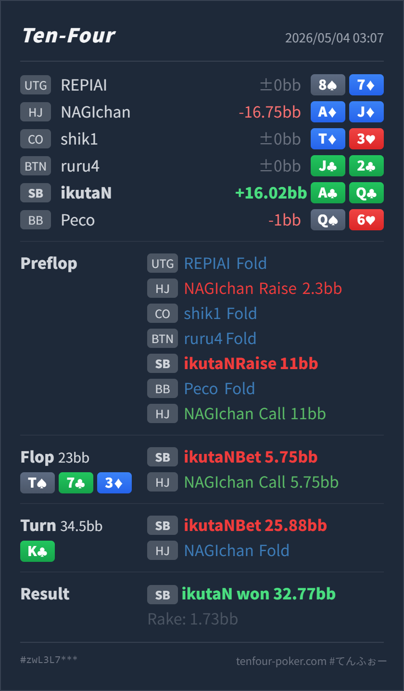

Preflop
良いA♣Q♣ は clear 3bet 候補です。11BB も OOP サイズとして自然です。
GTO基準で、HJ 2.3BB open に対して SB A♣Q♣ を 11BB へ 3bet する判断は良いです。flop T♠ 7♣ 3♦ の 1/4 pot c-bet も、3bet 側の range advantage を使う自然な小サイズです。turn K♣ は Hero に nut flush draw と gutshot が付き、SB の AK/KK/KQ も強く見えるカードなので、25.88BB の大きめ barrel はかなり良い semi-bluff です。結果として HJ A♦J♦ を降ろせており、line 全体はかなりきれいです。
A♣ Q♣A♦ J♦T♠ 7♣ 3♦ / K♣K♣ で equity と range advantage が同時に増えた時、大きく押し切れているか。A♣Q♣ は nut flush draw + Broadway draw + high-card blocker を持つため、turn の bluff 候補としてかなり質が高いです。A♣ Q♣A♦ J♦2.3BB, CO fold, BTN fold, SB Hero 3bet 11BB, BB fold, HJ callT♠ 7♣ 3♦ / K♣23BB, SB Hero bet 5.75BB, HJ call34.5BB, SB Hero bet 25.88BB, HJ fold32.77BB, rake 1.73BB
良いA♣Q♣ は clear 3bet 候補です。11BB も OOP サイズとして自然です。
T♠ 7♣ 3♦良い
Hero は no pair ですが、2 overcard と backdoor club を持ちます。
K♣良い
Hero は nut flush draw + gutshot で、call されても river equity があります。
計画だけ持つ
call された場合、club と J は強い継続候補です。blank は相手の call range が強くなるため、無理に3発目を打ちすぎない方が安定します。
| 論点 | その場で置いた見立て | どこがズレやすいか | 次回の基準 |
|---|---|---|---|
turn K♣ の大サイズ | scare card なので強く打てそう | 発想は良いです。このカードは SB の AK/KK/KQ を強くしつつ、Hero 自身も nut flush draw + gutshot を得ています。単なる scare barrel ではなく、equity の裏付けがあります。 | scare card で打つ時は、自分の combo が draw / blocker / value 表現をどれだけ満たすかを見る |
| river 計画 | turn で降ろせれば十分 | 今回は fold で終わりましたが、call された時は pot が大きくなります。club、J、A/Q、blank で方針を分けておくと river が楽になります。 | turn large barrel は、call された時の river continue / give up 条件まで決めて打つ |
| ストリート | その時点の見え方 | 実ハンドの位置づけ | 評価 | その場の一手 |
|---|---|---|---|---|
| Preflop | HJ open に対して SB は OOP なので call を多く作りすぎず、強い suited broadway を 3bet に回します。 | A♣Q♣ は clear 3bet 候補です。11BB も OOP サイズとして自然です。 | 良い | 3bet で問題ありません。 |
Flop T♠ 7♣ 3♦ | SB 3bet range は overpair、AK/AQ、強い broadway を多く持ちます。HJ は pocket、Tx、broadway float が残ります。 | Hero は no pair ですが、2 overcard と backdoor club を持ちます。 | 良い | 5.75BB の small c-bet は自然です。range 全体で pressure をかけつつ、call されても turn で強くなるカードがあります。 |
Turn K♣ | SB 側の AK/KK/KQ が強くなり、HJ の medium pair や AJ/AQ/QJ はかなり苦しくなります。 | Hero は nut flush draw + gutshot で、call されても river equity があります。 | 良い | 25.88BB の大きめ barrel はかなり良いです。fold equity と実現 equity の両方があります。 |
| River | 今回は到達せず。 | call された場合、club と J は強い継続候補です。blank は相手の call range が強くなるため、無理に3発目を打ちすぎない方が安定します。 | 計画だけ持つ | turn で大きく打つ時点で、river の良いカードと諦めるカードを分けておきます。 |
A♣Q♣ は HJ open に対する SB 3bet の主力です。A♦J♦ のような high-card float を flop で続け、turn 大サイズに素直に fold するなら、この line はかなり利益的です。